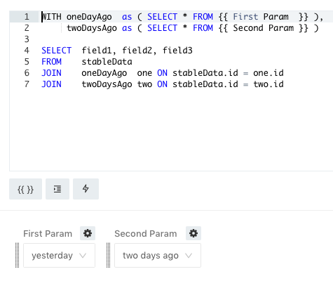

how to build one big Query which contains query to 1DataSourse and with result from first DataSourse need to be filtered second Query from 2 DataSourse
This site is in read only mode. Please continue to browse, but replying, likes,
and other actions are disabled for now.
Welcome to the forum! It sounds like you need a Query Based Dropdown List Parameter.
Or if you need something like a drill-down then this post my be more useful:
Do you have a more specific example for forum readers to work with?
SELECT
id1,
total_sum,
total_count,
FROM DataSource1 a1
LEFT JOIN ( SELECT id2, total_sum, total_count FROM DATASourse2) a2
ON a1.id1 = a2.id2
WHERE
id1>200
list of id2 includes itself list of id1, i wanna bring rest data from DataSourse2 only for short list id1, i am not interested in proceed all long list id2
In that case, I would recommend the Query Results Data Source. Make a query of Datasource 1 and Datasource 2 and then reference them from a third query against the QRDS.
my Big Query use two queries first query_123 and second query_456 , i made something like this
select
a, b
from query_123
left join
query_456
where conditions.
Query 456 contains itself parameter which changes every time when we run Query 456. For example we need every time write previose date and current date.
i changed all on
select
a, b
from query_123
left join
cached_query_456
where conditions.
to save the last updated version of this query in cache to use it afterwards in Big Query
but have this error. Could you help me?
I merged your two topics since they’re part of the same issue.
QRDS doesn’t work on queries with parameters. That’s why you see the no cached query result found error. But you don’t need a parameter for these queries. Set them up like this instead:
Query 1
Uses a regular data source like postgres, mysql, redshift, etc.
SELECT field1, field2, field3
FROM DS1
WHERE ...
Query 2
Uses QRDS to examine query_1
WITH LimitedVersionOfQuery1 as (
SELECT field1, field2, field3
FROM query_1
WHERE ...
AND someDate > {{ window.start }}
AND someDate < {{ window.end }}
)
SELECT q1.field1, q1.field2, q1.field3
lvoq1.field1, lvoq1.field2, lvoq1.field3
FROM query_1 q1
LEFT JOIN LimitedVersionOfQuery1 lvoq1
ON q1.field1 = lvoq1.field1
WHERE ...
I think you can do the same thing with the original data source without using the QRDS. But the above example would work.
It’s difficult to give concrete examples without knowing your exact use case. But nothing you’ve said so far suggests that Redash can’t do what you need 
Unfortunately, this case can’t describe my situation. I would be very grateful you if you suggest something that are useful in my case. Problem that i don’t need parameter for making filter of sample, i need parameter for every day changing tables from which i need bring data. Just imagine that every day created new table with name table_(current _date), and in big query i need to join data of first table from dataSourse1(it is stable) and from second query(which contains itself two tables information: from table with end name of current date and from table with ending name of yesterday date) from DataSourse2 and i want that every day if i run this second query i would run today table and yesterday, for it i created parameter where someone who don’t need to rewrite code of second sql query could give ending of this tables, and after that run code of Big Query cause i would save cache of this second query for running big query
If I understood correctly, you need a query that looks like this:
WITH oneDayAgo as ( SELECT * FROM data_oneDayAgo ),
twoDaysAgo as ( SELECT * FROM data_twoDaysAgo)
SELECT field1, field2, field3
FROM stableData
JOIN oneDayAgo one ON stableData.id = one.id
JOIN twoDaysAgo two ON stableData.id = two.id
Where data_oneDayAgo and data_twoDaysAgo are passed as parameters. This way you see a fresh result each day.
I see two ways to do this in Redash.
Use a Query Based Dropdown List Parameter
Write a query to return string table names based on dates. This example uses Postgres.
SELECT 'yesterday' "key", 'data_' || TO_CHAR(DATE_TRUNC('day', NOW()::timestamp) - interval '1 day', 'YYYYMMDD') "value"
UNION ALL
SELECT 'two days ago' "key", 'data_' || TO_CHAR(DATE_TRUNC('day', NOW()::timestamp) - interval '2 days', 'YYYYMMDD') "value"
Any time you run this query, it will return two rows. Since today is 2019-10-04 it returns:
| key | value |
|---|---|
| yesterday | data_20191003 |
| two days ago | data_20191002 |
You can use a different format string if your daily data tables don’t follow ISO8601.
Then your main query would look like this:

{{ First Param }} and {{ Second Param }} are Query Based Dropdown List Parameters pointed at the query above. If you execute this query it will pull data from yesterday and two days ago, then join that data against your stable data source.
I tested this on Redash V7 and V8 and it worked as expected.
Write a Database Function to return daily data
This approach makes more sense, I think. Since it doesn’t rely on features of Redash. It leverages the power of your database. In this case, you would write a function for your database that returns data from the correct table.
Consult the documentation for your database for the proper function syntax. Your resulting SQL would look somewhat like this:
WITH oneDayAgo as ( SELECT * FROM FUNC_THAT_RETURNS_YESTERDAY ),
twoDaysAgo as ( SELECT * FROM FUNC_THAT_RETURNS_TWO_DAYS_AGO)
SELECT field1, field2, field3
FROM stableData
JOIN oneDayAgo one ON stableData.id = one.id
JOIN twoDaysAgo two ON stableData.id = two.id
select * from CONCAT( 'cc' ,'_report_20120813') limit 5; does't work
select * from 'cc' || '_report_20120813') limit 5; does't work
select * from CONCAT_WS( _, 'cc','report_20120813') limit 5; does't work
select * from GROUP_CONCAT('cc','report_20120813' SEPARATOR '_'`) limit 5;
Does’t work
Error running query: **You have an error in your SQL syntax; check the manual that corresponds to your MySQL server version for the right syntax to use near ''cc' ||'_report_20120813' limit 5' at line 1**
select *
FROM
(select CONCAT(cc_report_, CONVERT((subdate((CURDATE()), 1)-1), CHAR))) as k
limit 5; works but return not all columns and data of existing table cc_report_20120813 but only name the table cc_report_20120813( select * from CONCAT(cc_report_, CONVERT((subdate((CURDATE()), 1)-1), CHAR))
doesn’t work). How i could bring data from table with this name? Please, i am very grateful you that you help me
I merged your two topics again since they’re part of the same issue.
You need dynamic SQL to do this in MySQL. I’ve not used dynamic statements in MySQL, but here is a related stack exchange article.
Have you tried the Query Based Dropdown List Parameter solution I wrote above? It would be much easier (and safer) than a dynamic SQL option. And shouldn’t take more than a few minutes to test.
An if i will made this Query Based Dropdown List Parameter it would be saved like cached_query or not? Cause i cannot make query with stable sourse cause it is in different DataSourse cause it i need have two queries : first with 1 datasourse(Postgres), second with joining two tables with this Query Based Dropdown List Parameter(MySql), and last which would proceed all two previouse queries
If you schedule the Query Based Dropdown List query to run each day then it will remain fresh.
That’s new information. It wasn’t clear before that you are joining data from MySQL and Postgres. Still, a version of the solution above could work assuming the amount of data is not too big.
The only difference is that each of your primary data sources will be joined using the QRDS. So the main query would change to be like this:
WITH oneDayAgo as ( SELECT * FROM query_xxxx ), --data_oneDayAgo
twoDaysAgo as ( SELECT * FROM query_xxxx) --data_twoDaysAgo
SELECT field1, field2, field3
FROM query_xxxx --stableData
JOIN oneDayAgo one ON stableData.id = one.id
JOIN twoDaysAgo two ON stableData.id = two.id
Try this. If you have too much data then the queries might fail. In which case you will need a proper ETL tool like Stitch (with which we also integrate  ).
).
I tried Query Based Dropdown List Parameter for second query but it still didn’t save cache. My third queries could contains just numbers of queries like query_23456, but in my case i can not write WITH statement cause i am at third DataSourse (QueryResult), second query must bring data from second DataSourse(Mysql), otherwise error. i don’t know what to do
To join data from two or more data sources you can use the QRDS. Or consider using a tool like Stitch if you have a lot of data and then point Redash at Stitch.
What you’ve said so far sounds feasible in Redash. But I’m struggling to understand your precise issue without a well-written example.
Would you mind sharing a little info about your solution? Readers in the future may thank you 
1 Like